pacman::p_load(sf, sfdep, tmap, tidyverse, knitr)
tmap_mode("plot")Local Measures of Spatial Autocorrelation
Hands-on Exercise 5
10 Local Measures of Spatial Autocorrelation
10.1 Overview
This exercise moves from global measures to local measures. I use the same Hunan county data as Exercise 5 Chapter 9, then identify where local clusters, outliers, hot spots, and cold spots occur. The workflow follows the course chapter and keeps the Queen contiguity and distance-weight choices visible.
The main questions are:
- Which counties form significant high-high or low-low GDPPC clusters?
- Which counties behave as spatial outliers compared with their neighbours?
- Do the Getis-Ord Gi* results identify the same broad areas as the local Moran analysis?
10.2 Getting Started
10.2.1 The analytical question
The global Moran’s I in Chapter 9 gave one summary for the whole province. Here I look at the local pattern behind that summary. A significant local statistic identifies a location and its neighbourhood under the selected weights; it does not explain the development mechanism by itself.
10.2.2 The Study Area and Data
The local folder contains the 88 county-level Hunan boundary units and Hunan_2012.csv used in the course example. The boundary is transformed from WGS 84 to UTM zone 50N before distance-based analysis.
10.2.3 Setting the Analytical Toolls
The original package command is kept visible below. The executable version uses the same package list.
pacman::p_load(sf, sfdep, tmap, tidyverse)10.3 Getting the Data Into R Environment
10.3.1 Import shapefile into r environment
hunan <- st_read(dsn = "chap10/data/geospatial",
layer = "Hunan") %>%
st_transform(crs = 32650)hunan <- st_read(
dsn = "data/geospatial",
layer = "Hunan",
quiet = TRUE
) %>%
st_transform(crs = 32650)
hunanSimple feature collection with 88 features and 7 fields
Geometry type: POLYGON
Dimension: XY
Bounding box: xmin: -316283 ymin: 2735534 xmax: 230955.3 ymax: 3349137
Projected CRS: WGS 84 / UTM zone 50N
First 10 features:
NAME_2 ID_3 NAME_3 ENGTYPE_3 Shape_Leng Shape_Area County
1 Changde 21098 Anxiang County 1.869074 0.10056190 Anxiang
2 Changde 21100 Hanshou County 2.360691 0.19978745 Hanshou
3 Changde 21101 Jinshi County City 1.425620 0.05302413 Jinshi
4 Changde 21102 Li County 3.474325 0.18908121 Li
5 Changde 21103 Linli County 2.289506 0.11450357 Linli
6 Changde 21104 Shimen County 4.171918 0.37194707 Shimen
7 Changsha 21109 Liuyang County City 4.060579 0.46016789 Liuyang
8 Changsha 21110 Ningxiang County 3.323754 0.26614198 Ningxiang
9 Changsha 21111 Wangcheng County 2.292093 0.13049161 Wangcheng
10 Chenzhou 21112 Anren County 2.240739 0.13343936 Anren
geometry
1 POLYGON ((22320.48 3301894,...
2 POLYGON ((35522.96 3230355,...
3 POLYGON ((5120.127 3285521,...
4 POLYGON ((-43433.9 3326204,...
5 POLYGON ((-19307.27 3304609...
6 POLYGON ((-89888.78 3347561...
7 POLYGON ((205590.4 3163847,...
8 POLYGON ((80276.09 3147094,...
9 POLYGON ((88026.26 3162804,...
10 POLYGON ((119822.4 2973043,...
Note
The course example transforms the Hunan polygons before spatial analysis. Keeping the projected CRS is especially important for the fixed distance band and nearest-neighbour weights later in the chapter.
10.3.2 Import csv file into r environment
hunan2012 <- read_csv("chap10/data/aspatial/Hunan_2012.csv")hunan2012 <- read_csv("data/aspatial/Hunan_2012.csv", show_col_types = FALSE)
hunan2012 %>% select(County, GDPPC) %>% slice_head(n = 6)# A tibble: 6 × 2
County GDPPC
<chr> <dbl>
1 Anhua 14567
2 Anren 12761
3 Anxiang 23667
4 Baojing 14563
5 Chaling 20078
6 Changning 2441810.3.3 Performing relational join
hunan <- left_join(hunan,hunan2012) %>%
select(1:4, 7, 15)hunan <- left_join(hunan, hunan2012, by = "County") %>%
select(1:4, 7, 15)
tibble(
county_units = nrow(hunan),
missing_gdppc = sum(is.na(hunan$GDPPC)),
mean_gdppc = mean(hunan$GDPPC, na.rm = TRUE)
)# A tibble: 1 × 3
county_units missing_gdppc mean_gdppc
<int> <int> <dbl>
1 88 0 24405.10.3.4 Visualising Regional Development Indicator
equal <- tm_shape(hunan) +
tm_polygons(fill = "GDPPC",
fill.scale = tm_scale_intervals(
style = "equal",
n = 5,
values = "brewer.blues"),
fill.legend = tm_legend(
title = "GDPPC",
position = tm_pos_in(
"left", "bottom"))) +
tm_borders(fill_alpha = 0.5) +
tm_title("Equal interval classification")
quantile <- tm_shape(hunan) +
tm_polygons(fill = "GDPPC",
fill.scale = tm_scale_intervals(
style = "quantile",
n = 5,
values = "brewer.blues"),
fill.legend = tm_legend(
title = "GDPPC",
position = tm_pos_in(
"left", "bottom"))) +
tm_borders(fill_alpha = 0.5) +
tm_title("Quantile interval classification")
tmap_arrange(equal,
quantile,
asp=1,
ncol=2)equal <- tm_shape(hunan) +
tm_polygons(
fill = "GDPPC",
fill.scale = tm_scale_intervals(
style = "equal",
n = 5,
values = "brewer.blues"),
fill.legend = tm_legend(
title = "GDPPC",
position = tm_pos_in("left", "bottom"))) +
tm_borders(fill_alpha = 0.5) +
tm_title("Equal interval classification")
quantile <- tm_shape(hunan) +
tm_polygons(
fill = "GDPPC",
fill.scale = tm_scale_intervals(
style = "quantile",
n = 5,
values = "brewer.blues"),
fill.legend = tm_legend(
title = "GDPPC",
position = tm_pos_in("left", "bottom"))) +
tm_borders(fill_alpha = 0.5) +
tm_title("Quantile interval classification")
tmap_arrange(equal, quantile, asp = 1, ncol = 2)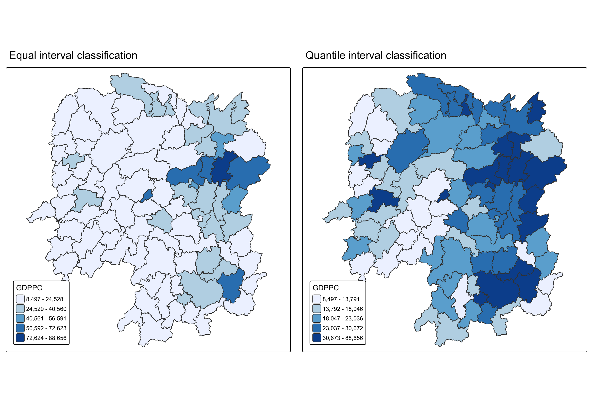
TipMy observation
The equal-interval map emphasises the upper GDPPC tail, while the quantile map makes county-to-county comparison easier. I use both as exploratory views and rely on the local statistics and p-values before calling an area a cluster.
10.4 Local Indicators of Spatial Association (LISA)
10.4.1 Computing Contiguity Spatial Weights
wm_q <- hunan %>%
mutate(nb = st_contiguity(geometry),
wt = st_weights(
nb, style = "W"),
.before = 1)summary(wm_q$nb)wm_q <- hunan %>%
mutate(
nb = st_contiguity(geometry),
wt = st_weights(nb, style = "W"),
.before = 1
)
summary(wm_q$nb)Neighbour list object:
Number of regions: 88
Number of nonzero links: 448
Percentage nonzero weights: 5.785124
Average number of links: 5.090909
Link number distribution:
1 2 3 4 5 6 7 8 9 11
2 2 12 16 24 14 11 4 2 1
2 least connected regions:
30 65 with 1 link
1 most connected region:
85 with 11 links10.4.2 Row-standardised weights matrix
The W style gives each county’s neighbours equal total influence. This makes the local scores comparable across counties with different numbers of neighbours.
10.4.3 Computing local Moran’s I
set.seed(1234)
lisa <- wm_q %>%
mutate(local_moran = local_moran(
GDPPC, nb, wt, nsim = 99),
.before = 1) %>%
unnest(local_moran)glimpse(lisa)set.seed(1234)
lisa <- wm_q %>%
mutate(
local_moran = local_moran(GDPPC, nb, wt, nsim = 99),
.before = 1
) %>%
unnest(local_moran)
glimpse(lisa)Rows: 88
Columns: 21
$ ii <dbl> -1.468468e-03, 2.587817e-02, -1.198765e-02, 1.022468e-03,…
$ eii <dbl> 1.472724e-03, -1.337157e-02, 2.542108e-03, -9.522978e-05,…
$ var_ii <dbl> 5.187992e-04, 1.413972e-02, 1.109689e-01, 4.768012e-06, 1…
$ z_ii <dbl> -0.12912898, 0.33007787, -0.04361717, 0.51186518, 0.33919…
$ p_ii <dbl> 8.972556e-01, 7.413411e-01, 9.652096e-01, 6.087454e-01, 7…
$ p_ii_sim <dbl> 0.80, 0.98, 0.92, 0.56, 0.58, 0.86, 0.06, 0.12, 0.02, 0.2…
$ p_folded_sim <dbl> 0.40, 0.49, 0.46, 0.28, 0.29, 0.43, 0.03, 0.06, 0.01, 0.1…
$ skewness <dbl> -1.0560692, -1.0439328, 0.8429629, 0.8423923, 1.3810032, …
$ kurtosis <dbl> 1.31492710, 0.76654076, 0.12251048, 0.37514702, 2.3883407…
$ mean <fct> Low-High, Low-Low, High-Low, High-High, High-High, High-L…
$ median <fct> High-High, High-High, High-High, High-High, High-High, Hi…
$ pysal <fct> Low-High, Low-Low, High-Low, High-High, High-High, High-L…
$ nb <nb> <2, 3, 4, 57, 85>, <1, 57, 58, 78, 85>, <1, 4, 5, 85>, <1,…
$ wt <list> <0.2, 0.2, 0.2, 0.2, 0.2>, <0.2, 0.2, 0.2, 0.2, 0.2>, <0…
$ NAME_2 <chr> "Changde", "Changde", "Changde", "Changde", "Changde", "C…
$ ID_3 <int> 21098, 21100, 21101, 21102, 21103, 21104, 21109, 21110, 2…
$ NAME_3 <chr> "Anxiang", "Hanshou", "Jinshi", "Li", "Linli", "Shimen", …
$ ENGTYPE_3 <chr> "County", "County", "County City", "County", "County", "C…
$ County <chr> "Anxiang", "Hanshou", "Jinshi", "Li", "Linli", "Shimen", …
$ GDPPC <dbl> 23667, 20981, 34592, 24473, 25554, 27137, 63118, 62202, 7…
$ geometry <POLYGON [m]> POLYGON ((22320.48 3301894,..., POLYGON ((35522.9…The local Moran output contains the local statistic, expected value, variance, z-score, simulated p-value, and cluster labels. The simulated p-value is the key field for separating a visible contrast from a statistically supported local pattern.
10.4.4 Mapping local Moran’s I values
tm_shape(lisa) +
tm_polygons(fill = "ii",
fill.scale = tm_scale_intervals(
style = "pretty",
n = 5,
values = "brewer.RdBu"),
fill.legend = tm_legend(
title = "Local Morans'I",
position = tm_pos_out())) +
tm_borders(fill_alpha = 0.5) +
tm_title("Loal Morans'I of GDPPC (Queen's method)")tm_shape(lisa) +
tm_polygons(
fill = "ii",
fill.scale = tm_scale_intervals(
style = "pretty", n = 5, values = "brewer.RdBu"),
fill.legend = tm_legend(
title = "Local Moran's I", position = tm_pos_out())) +
tm_borders(fill_alpha = 0.5) +
tm_title("Local Moran's I of GDPPC (Queen's method)")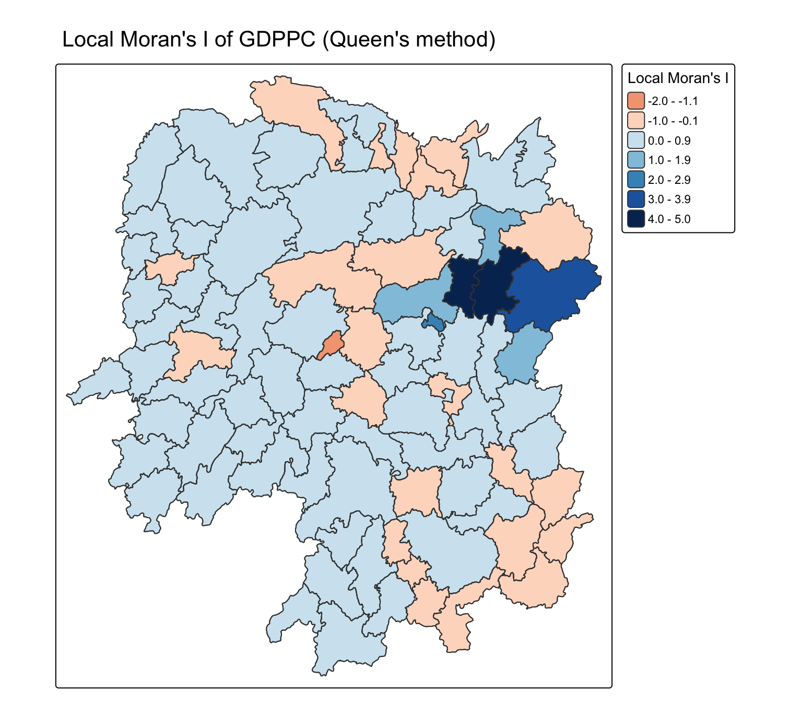
10.4.5 Mapping local Moran’s I p-values
tm_shape(lisa) +
tm_polygons(fill = "p_ii",
fill.scale = tm_scale_intervals(
breaks = c(-Inf, 0.001, 0.01, 0.05, 0.1, Inf),
values = "-brewer.Reds"),
fill.legend = tm_legend(
title = "p-value",
position = tm_pos_out())) +
tm_borders(fill_alpha = 0.5) +
tm_title("p-values of Loal Moran's I of GDPPC (Queen's method)")tm_shape(lisa) +
tm_polygons(
fill = "p_ii",
fill.scale = tm_scale_intervals(
breaks = c(-Inf, 0.001, 0.01, 0.05, 0.1, Inf),
values = "brewer.Reds"),
fill.legend = tm_legend(
title = "p-value", position = tm_pos_out())) +
tm_borders(fill_alpha = 0.5) +
tm_title("p-values of Local Moran's I of GDPPC (Queen's method)")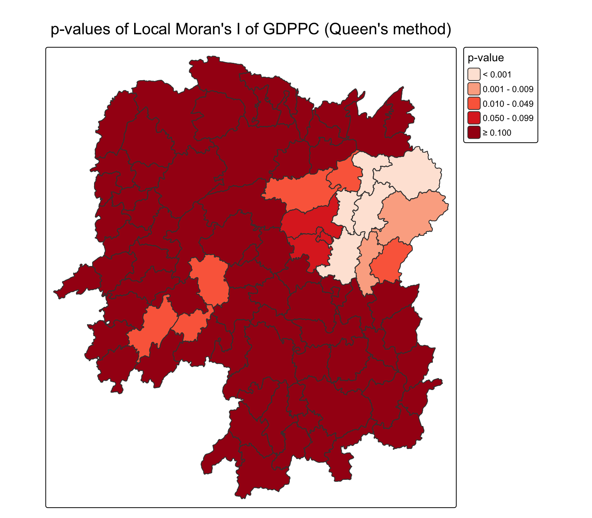
10.4.6 Mapping both local Moran’s I values and p-values
ii.map <- tm_shape(lisa) +
tm_polygons(fill = "ii",
fill.scale = tm_scale_intervals(
style = "pretty",
n = 5,
values = "brewer.RdBu"),
fill.legend = tm_legend(
title = "Local Moran's I",
position = tm_pos_in(
"left", "bottom"))) +
tm_borders(fill_alpha = 0.5) +
tm_title("Loal Moran's I of GDPPC (Queen's method)")
p_ii.map <- tm_shape(lisa) +
tm_polygons(fill = "p_ii",
fill.scale = tm_scale_intervals(
breaks = c(-Inf, 0.001, 0.01, 0.05, 0.1, Inf),
values = "-brewer.Reds"),
fill.legend = tm_legend(
title = "p-value",
position = tm_pos_in("left", "bottom")
)) +
tm_borders(fill_alpha = 0.5) +
tm_title("p-values of Loal Moran's I of GDPPC (Queen's method)")
tmap_arrange(ii.map, p_ii.map, asp=1, ncol=2)ii.map <- tm_shape(lisa) +
tm_polygons(
fill = "ii",
fill.scale = tm_scale_intervals(
style = "pretty", n = 5, values = "brewer.RdBu"),
fill.legend = tm_legend(
title = "Local Moran's I", position = tm_pos_in("left", "bottom"))) +
tm_borders(fill_alpha = 0.5) +
tm_title("Local Moran's I of GDPPC (Queen's method)")
p_ii.map <- tm_shape(lisa) +
tm_polygons(
fill = "p_ii",
fill.scale = tm_scale_intervals(
breaks = c(0, 0.001, 0.01, 0.05, 0.1, 1),
values = "brewer.Reds"),
fill.legend = tm_legend(
title = "p-value", position = tm_pos_in("left", "bottom"))) +
tm_borders(fill_alpha = 0.5) +
tm_title("p-values of Local Moran's I (Queen's method)")
tmap_arrange(ii.map, p_ii.map, asp = 1, ncol = 2)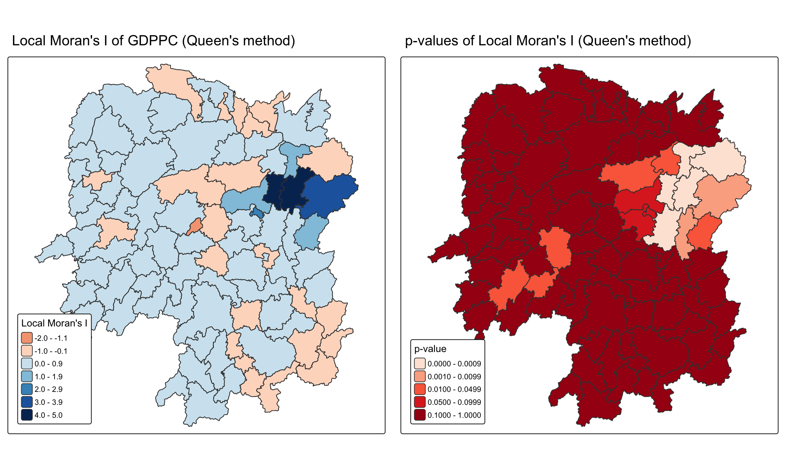
TipWhat I noticed
The local Moran statistic map shows direction and magnitude, while the p-value map shows where that signal is statistically supported. Reading only the first map would risk turning a strong colour into a cluster claim without checking uncertainty.
10.5 Preparing and Visualising LISA Map
10.5.1 Plotting Moran scatterplot
lisa <- lisa %>%
mutate(lag_GDPPC = st_lag(
GDPPC, nb, wt),
.before = 1) %>%
unnest(lag_GDPPC)ggplot(data = lisa,
aes(x = GDPPC,
y = lag_GDPPC)) +
geom_point() +
geom_smooth(method = "lm",
se = FALSE,
color = "red") +
labs(x = "GDPPC",
y = "Spatial Lag of GDPPC",
title = "Moran Scatterplot") +
theme_minimal()ggplot(data = lisa,
aes(x = GDPPC,
y = lag_GDPPC,
color = mean)) +
geom_point(size = 2) +
geom_smooth(method = "lm",
se = FALSE,
color = "black") +
geom_hline(yintercept=mean(lisa$lag_GDPPC), lty=2) +
geom_vline(xintercept=mean(lisa$GDPPC), lty=2) +
scale_color_manual(
values = c("High-High" = "red",
"Low-Low" = "blue",
"Low-High" = "lightblue",
"High-Low" = "pink")) +
labs(x = "GDPPC",
y = "Spatial Lag of GDPPC",
title = "Moran Scatterplot with LISA Quadrants") +
theme_minimal()lisa <- lisa %>%
mutate(lag_GDPPC = st_lag(GDPPC, nb, wt), .before = 1) %>%
unnest(lag_GDPPC)
ggplot(lisa, aes(x = GDPPC, y = lag_GDPPC, color = mean)) +
geom_point(size = 2) +
geom_smooth(method = "lm", se = FALSE, color = "black") +
geom_hline(yintercept = mean(lisa$lag_GDPPC), linetype = 2) +
geom_vline(xintercept = mean(lisa$GDPPC), linetype = 2) +
scale_color_manual(values = c(
"High-High" = "red", "Low-Low" = "blue",
"Low-High" = "lightblue", "High-Low" = "pink")) +
labs(x = "GDPPC", y = "Spatial Lag of GDPPC",
title = "Moran Scatterplot with LISA Quadrants") +
theme_minimal()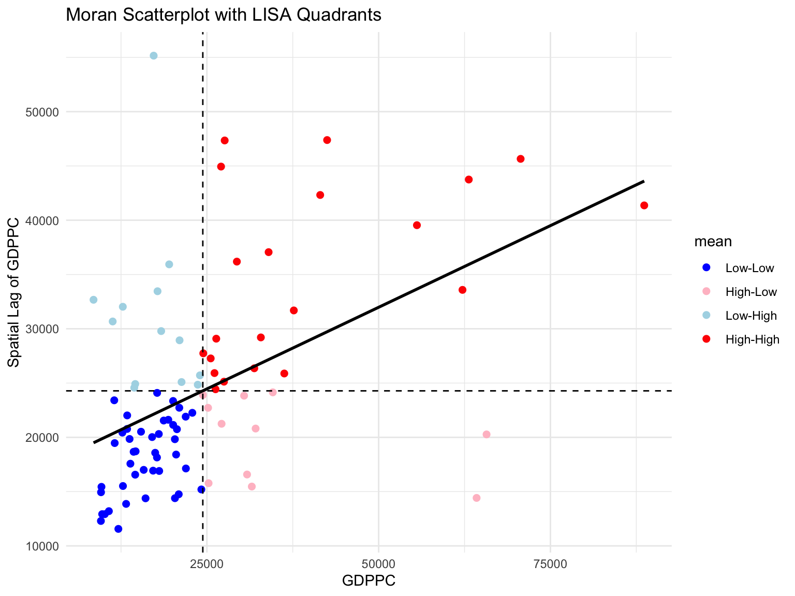
The four quadrants separate high-high and low-low clusters from high-low and low-high outliers. I read the quadrant label together with p_ii, because a quadrant describes the relationship while the p-value describes the strength of evidence.
10.5.2 Plotting Moran scatterplot with standardised variable
lisa <- lisa %>%
mutate(z_GDPPC = scale(GDPPC),
z_lag_GDPPC = scale(lag_GDPPC),
.before = 1)ggplot(data = lisa,
aes(x = z_GDPPC,
y = z_lag_GDPPC,
color = mean)) +
geom_point(size = 2) +
geom_smooth(method = "lm",
se = FALSE,
color = "black") +
geom_hline(yintercept=mean(lisa$z_lag_GDPPC), lty=2) +
geom_vline(xintercept=mean(lisa$z_GDPPC), lty=2) +
scale_color_manual(
values = c("High-High" = "red",
"Low-Low" = "blue",
"Low-High" = "lightblue",
"High-Low" = "pink")) +
labs(x = "Standardised GDPPC",
y = "Standardised Spatial Lag of GDPPC",
title = "Standardised Moran Scatterplot with LISA Quadrants") +
theme_minimal()lisa <- lisa %>%
mutate(
z_GDPPC = as.vector(scale(GDPPC)),
z_lag_GDPPC = as.vector(scale(lag_GDPPC)),
.before = 1
)
ggplot(lisa, aes(x = z_GDPPC, y = z_lag_GDPPC, color = mean)) +
geom_point(size = 2) +
geom_smooth(method = "lm", se = FALSE, color = "black") +
geom_hline(yintercept = mean(lisa$z_lag_GDPPC), linetype = 2) +
geom_vline(xintercept = mean(lisa$z_GDPPC), linetype = 2) +
scale_color_manual(values = c(
"High-High" = "red", "Low-Low" = "blue",
"Low-High" = "lightblue", "High-Low" = "pink")) +
labs(x = "Standardised GDPPC",
y = "Standardised Spatial Lag of GDPPC",
title = "Standardised Moran Scatterplot with LISA Quadrants") +
theme_minimal()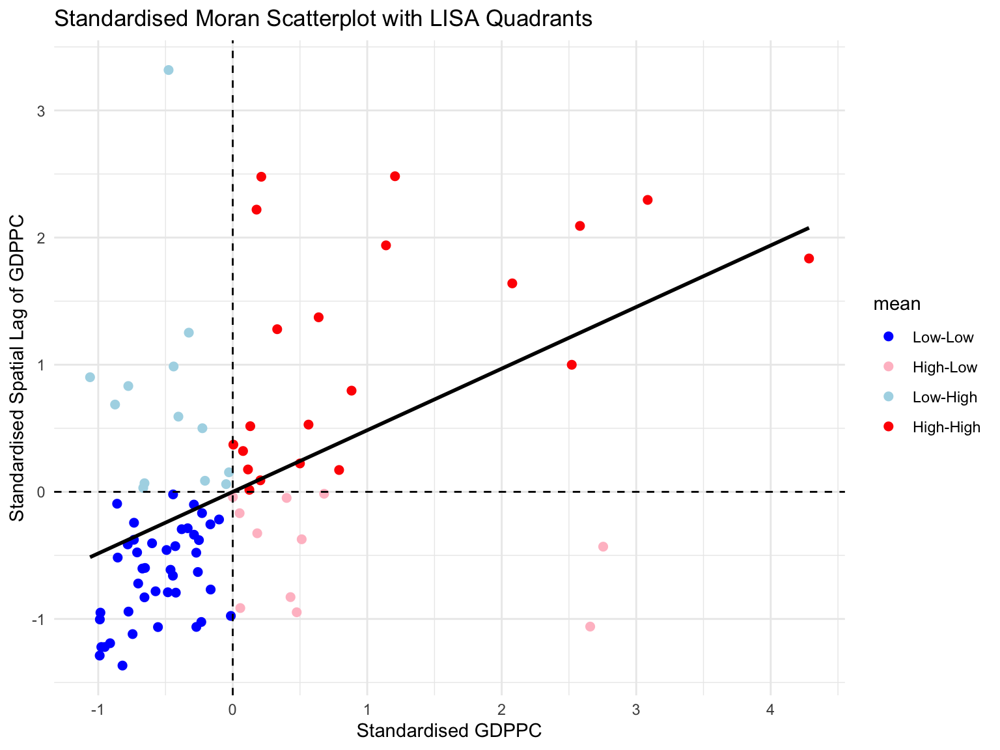
10.5.3 Preparing LISA map classes
signif <- 0.05lisa <- lisa %>%
mutate(
LISA_cluster = ifelse(
p_ii < 0.05,
as.character(mean),
"Insignificant"),
LISA_cluster = factor(
LISA_cluster,
levels = c("Insignificant", "Low-Low", "Low-High", "High-Low", "High-High")
)
)signif <- 0.05
lisa <- lisa %>%
mutate(
LISA_cluster = if_else(p_ii < signif, as.character(mean), "Insignificant"),
LISA_cluster = factor(
LISA_cluster,
levels = c("Insignificant", "Low-Low", "Low-High", "High-Low", "High-High")
)
)10.5.4 Plotting and visualising LISA map
lisa_map <- tm_shape(lisa) +
tm_polygons(
fill = "LISA_cluster",
fill.scale = tm_scale_categorical(
values = c(
"grey80", "blue", "lightblue", "pink", "red"
)
),
fill.legend = tm_legend(
title = "LISA Cluster",
position = tm_pos_in("left", "bottom"))
) +
tm_borders() +
tm_title("Local Moran's I Clusters (p < 0.05)")
lisa_maplisa_map <- tm_shape(lisa) +
tm_polygons(
fill = "LISA_cluster",
fill.scale = tm_scale_categorical(values = c(
"grey80", "blue", "lightblue", "pink", "red")),
fill.legend = tm_legend(
title = "LISA Cluster", position = tm_pos_in("left", "bottom"))) +
tm_borders() +
tm_title("Local Moran's I Clusters (p < 0.05)")
lisa_map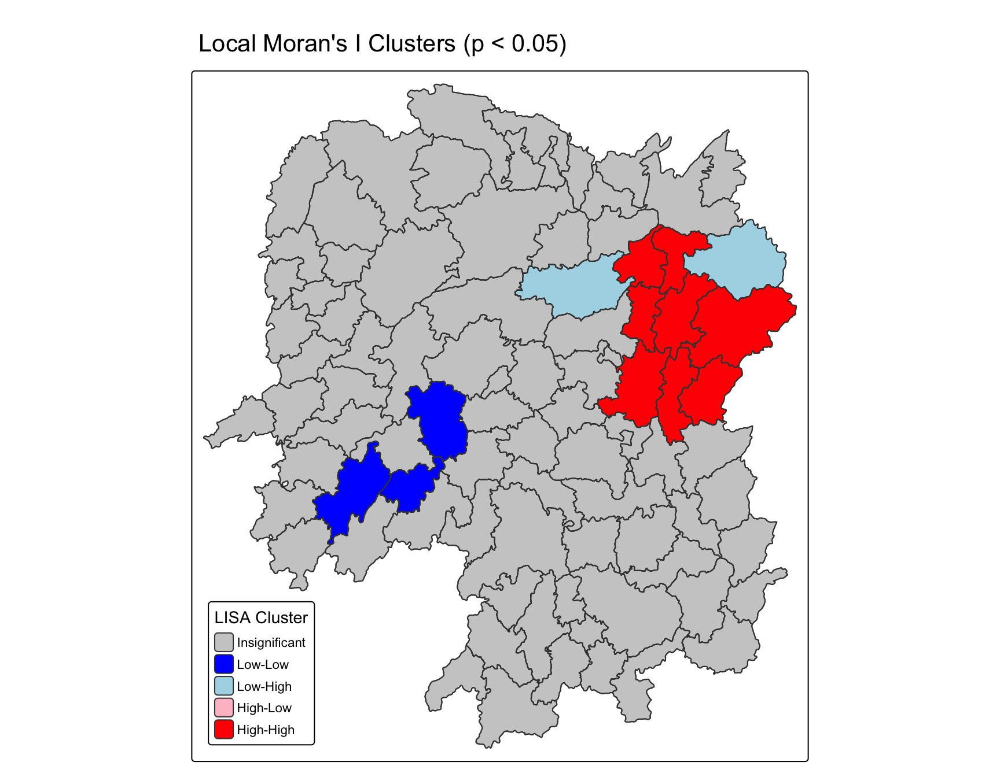
TipMy observation
The LISA map is more useful for locating candidate clusters than the global Moran value. I treat grey or insignificant counties as an important result too: a visible high or low GDPPC value is not automatically part of a statistically supported local cluster.
10.6 Hot Spots and Cold Spots Analysis (HCSA)
The Getis-Ord Gi* analysis changes the neighbour definition from shared borders to distance-based proximity. I keep both fixed and adaptive distance weights because the two choices answer slightly different questions about neighbourhood scale.
10.6.1 Deriving distance weight matrix
10.6.1.1 Computing fixed distance weights
ct <- critical_threshold(st_geometry(hunan))
cthunan_fdw <- hunan %>%
mutate(nb = include_self(
st_dist_band(
st_geometry(geometry),
upper = ct)),
wt = st_weights(nb,
style = "W"),
.before = 1)ct <- critical_threshold(st_geometry(hunan))
ct[1] 60799.91hunan_fdw <- hunan %>%
mutate(
nb = include_self(st_dist_band(st_geometry(geometry), upper = ct)),
wt = st_weights(nb, style = "W"),
.before = 1
)critical_threshold() gives a distance large enough for every county to have at least one neighbour. The include_self() step is retained because the Gi* statistic includes the focal county in the local sum.
10.6.1.2 Computing adaptive distance weights
hunan_adw <- hunan %>%
mutate(nb = include_self(
st_knn(
st_geometry(geometry),
k = 6)),
wt = st_weights(
nb, style = "W"),
.before = 1)hunan_adw <- hunan %>%
mutate(
nb = include_self(st_knn(st_geometry(geometry), k = 6)),
wt = st_weights(nb, style = "W"),
.before = 1
)10.6.2 Computing local Gi*
HCSA_fdw <- hunan_fdw %>%
mutate(
gistar = local_gstar_perm(
GDPPC, nb, wt, nsim = 99),
.before = 1) %>%
unnest(gistar)set.seed(1234)
HCSA_fdw <- hunan_fdw %>%
mutate(
gistar = local_gstar_perm(GDPPC, nb, wt, nsim = 99),
.before = 1
) %>%
unnest(gistar)10.6.3 Preparing and Visualising HCSA Map
10.6.3.1 Mapping Gi* with fixed distance weights
tm_shape(HCSA_fdw) +
tm_polygons(fill = "gi_star",
fill.scale = tm_scale_intervals(
style = "pretty",
n = 6,
values = "brewer.rd_bu"),
fill.legend = tm_legend(
title = "Gi*",
position = tm_pos_out())) +
tm_borders(fill_alpha = 0.5) +
tm_title("Gi* of GDPPC (Fixed Bandwidth d = 60799.91m)")tm_shape(HCSA_fdw) +
tm_polygons(
fill = "gi_star",
fill.scale = tm_scale_intervals(
style = "pretty", n = 6, values = "brewer.rd_bu"),
fill.legend = tm_legend(title = "Gi*", position = tm_pos_out())) +
tm_borders(fill_alpha = 0.5) +
tm_title("Gi* of GDPPC (Fixed distance band)")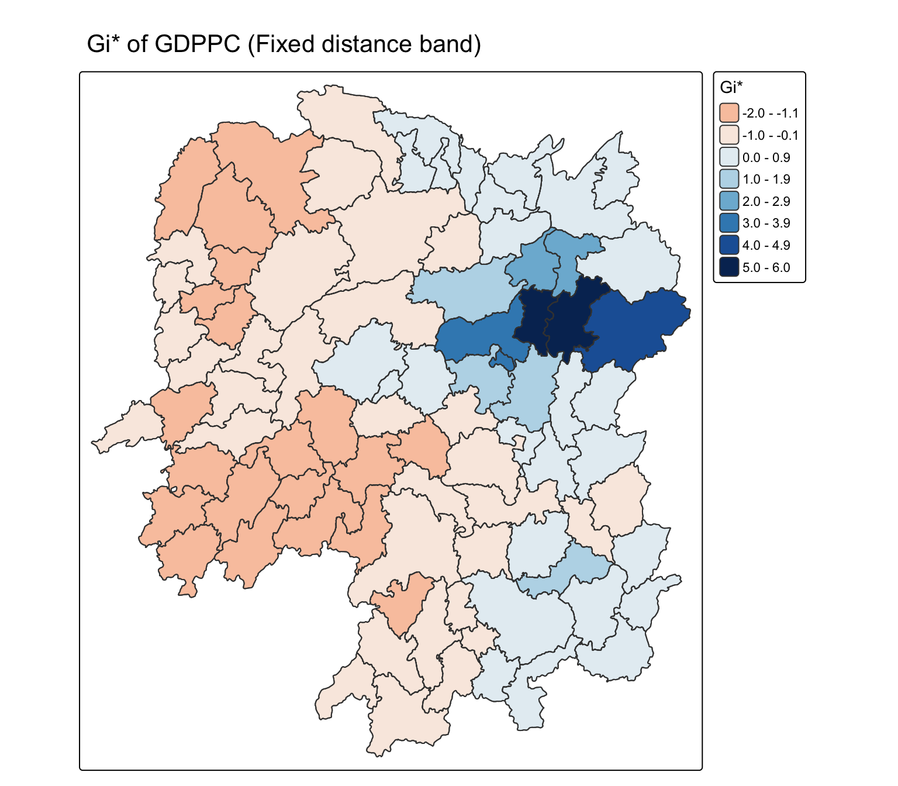
10.6.3.2 Mapping local Gi* p-values
tm_shape(HCSA_fdw) +
tm_polygons(fill = "p_sim",
fill.scale = tm_scale_intervals(
breaks = c(-Inf, 0.001, 0.01, 0.05, 0.1, Inf),
values = "-brewer.Reds"),
fill.legend = tm_legend(
title = "simulated p-value",
position = tm_pos_out())) +
tm_borders(fill_alpha = 0.5) +
tm_title("p-values of local Gi* of GDPPC (Fixed distance)")tm_shape(HCSA_fdw) +
tm_polygons(
fill = "p_sim",
fill.scale = tm_scale_intervals(
breaks = c(0, 0.001, 0.01, 0.05, 0.1, 1),
values = "brewer.Reds"),
fill.legend = tm_legend(
title = "simulated p-value", position = tm_pos_out())) +
tm_borders(fill_alpha = 0.5) +
tm_title("p-values of local Gi* of GDPPC (Fixed distance)")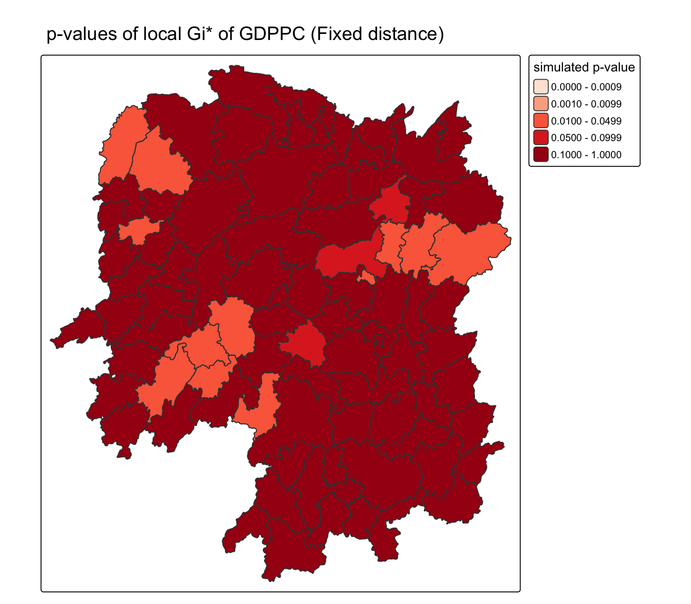
10.6.3.3 Mapping both Gi* values and p-values
Gi_star_map <- tm_shape(HCSA_fdw) +
tm_polygons(fill = "gi_star",
fill.scale = tm_scale_intervals(
style = "pretty",
n = 5,
values = "-brewer.rd_bu"),
fill.legend = tm_legend(
title = "local Gi*",
position = tm_pos_in(
"left", "bottom"))) +
tm_borders(fill_alpha = 0.5) +
tm_title("Local Gi* of GDPPC")
p_values_map <- tm_shape(HCSA_fdw) +
tm_polygons(fill = "p_sim",
fill.scale = tm_scale_intervals(
breaks = c(0, 0.001, 0.01, 0.05, 0.1, 1),
values = "-brewer.reds"),
fill.legend = tm_legend(
title = "p-value",
position = tm_pos_in("left", "bottom")
)) +
tm_borders(fill_alpha = 0.5) +
tm_title("p-values of local Gi* of GDPPC (fixed distance)")
tmap_arrange(Gi_star_map, p_values_map, asp=1, ncol=2)Gi_star_map <- tm_shape(HCSA_fdw) +
tm_polygons(
fill = "gi_star",
fill.scale = tm_scale_intervals(
style = "pretty", n = 5, values = "brewer.rd_bu"),
fill.legend = tm_legend(
title = "local Gi*", position = tm_pos_in("left", "bottom"))) +
tm_borders(fill_alpha = 0.5) +
tm_title("Local Gi* of GDPPC")
p_values_map <- tm_shape(HCSA_fdw) +
tm_polygons(
fill = "p_sim",
fill.scale = tm_scale_intervals(
breaks = c(0, 0.001, 0.01, 0.05, 0.1, 1),
values = "brewer.Reds"),
fill.legend = tm_legend(
title = "p-value", position = tm_pos_in("left", "bottom"))) +
tm_borders(fill_alpha = 0.5) +
tm_title("p-values of local Gi* (fixed distance)")
tmap_arrange(Gi_star_map, p_values_map, asp = 1, ncol = 2)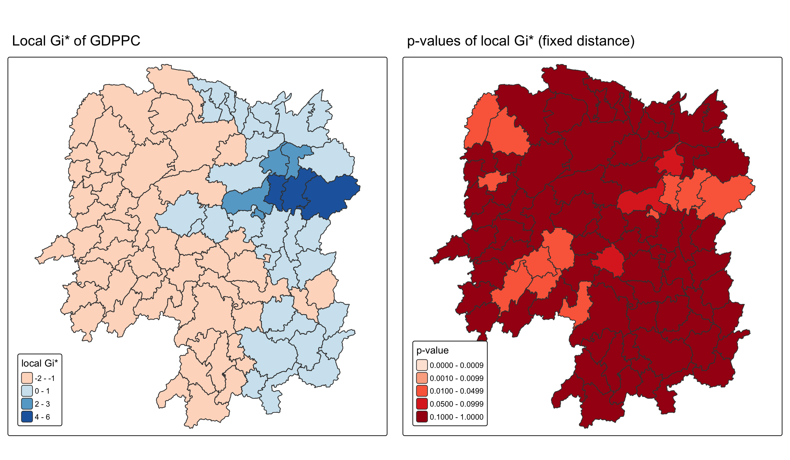
10.6.3.4 Plotting and visualising HCSA Map
HCSA_fdw <- HCSA_fdw %>%
mutate(HCSA_cluster = case_when(
p_sim > 0.05 ~ "Insignificant",
p_sim <= 0.05 & cluster == "High" ~ "Hot spot",
p_sim <= 0.05 & cluster == "Low" ~ "Cold spot",
TRUE ~ "Other"),
HCSA_cluster = factor(
HCSA_cluster,
levels = c("Insignificant", "Hot spot", "Cold spot")
),
.before = 1
)HCSA_map <- tm_shape(HCSA_fdw) +
tm_polygons(
fill = "HCSA_cluster",
fill.scale = tm_scale_categorical(
values = c("grey80", "red", "blue")
),
fill.legend = tm_legend(
title = "HSCA Cluster",
position = tm_pos_in("left", "bottom"))
) +
tm_borders() +
tm_title("HCSA Clusters (p < 0.05)")
HCSA_maptmap_arrange(Gi_star_map, HCSA_map, asp=1, ncol=2)HCSA_fdw <- HCSA_fdw %>%
mutate(
HCSA_cluster = case_when(
p_sim > 0.05 ~ "Insignificant",
p_sim <= 0.05 & cluster == "High" ~ "Hot spot",
p_sim <= 0.05 & cluster == "Low" ~ "Cold spot",
TRUE ~ "Other"
),
HCSA_cluster = factor(
HCSA_cluster,
levels = c("Insignificant", "Hot spot", "Cold spot")
),
.before = 1
)
HCSA_map <- tm_shape(HCSA_fdw) +
tm_polygons(
fill = "HCSA_cluster",
fill.scale = tm_scale_categorical(values = c("grey80", "red", "blue")),
fill.legend = tm_legend(
title = "HCSA Cluster", position = tm_pos_in("left", "bottom"))) +
tm_borders() +
tm_title("HCSA Clusters (p < 0.05)")
tmap_arrange(Gi_star_map, HCSA_map, asp = 1, ncol = 2)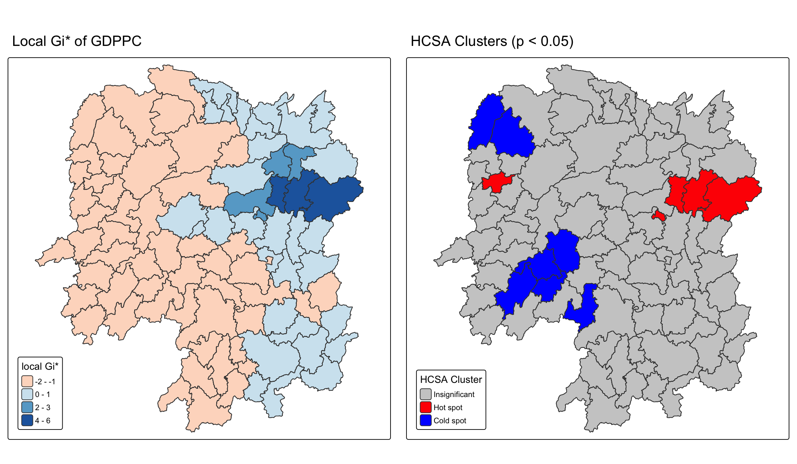
TipMy interpretation
LISA describes similarity or contrast between a county and its contiguous neighbours. Gi* instead measures whether high or low values accumulate within a distance-defined neighbourhood. Agreement between the two methods would make a location more convincing as a candidate hot spot; disagreement would show sensitivity to the neighbour definition.
10.7 Summary
The local Moran workflow identifies where the global positive autocorrelation is concentrated and separates clusters from outliers. The Gi* workflow adds a distance-based view of hot and cold spots. Both results depend on the weights matrix, the significance threshold, and the GDPPC variable, so I report the spatial definition with the map rather than treating a colour pattern as self-explanatory.